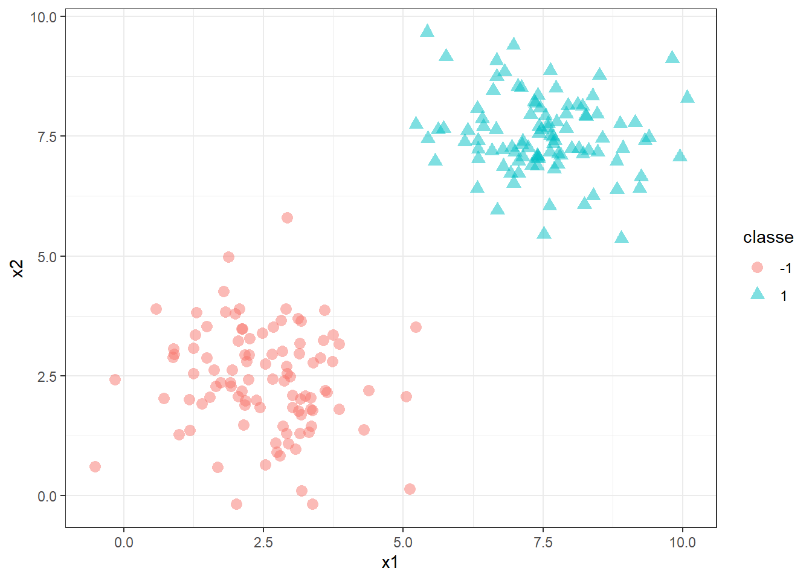
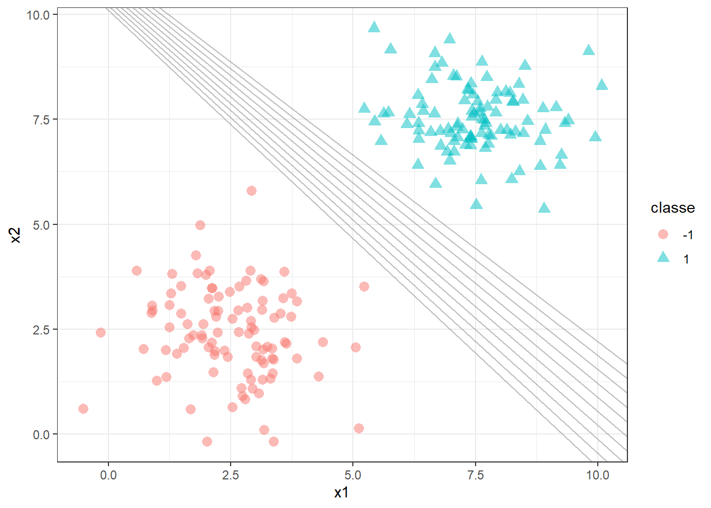
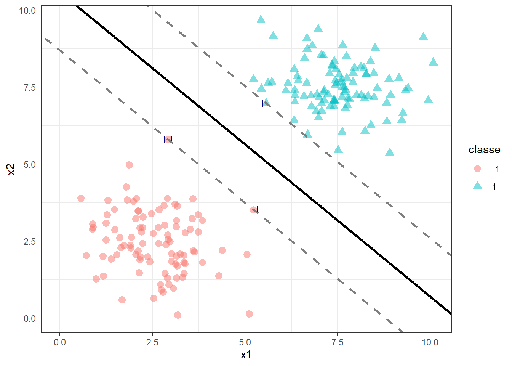
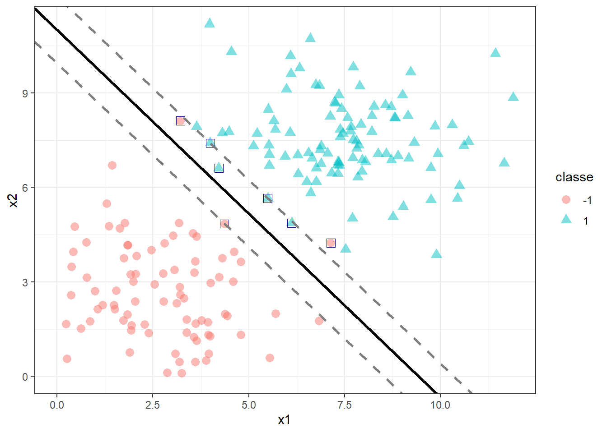
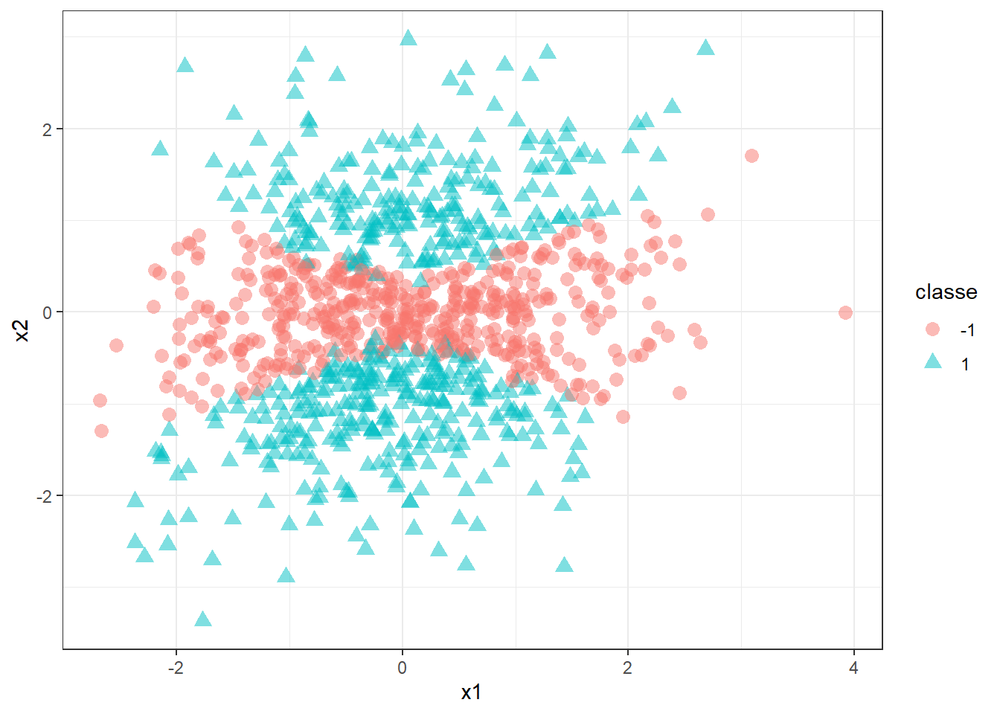
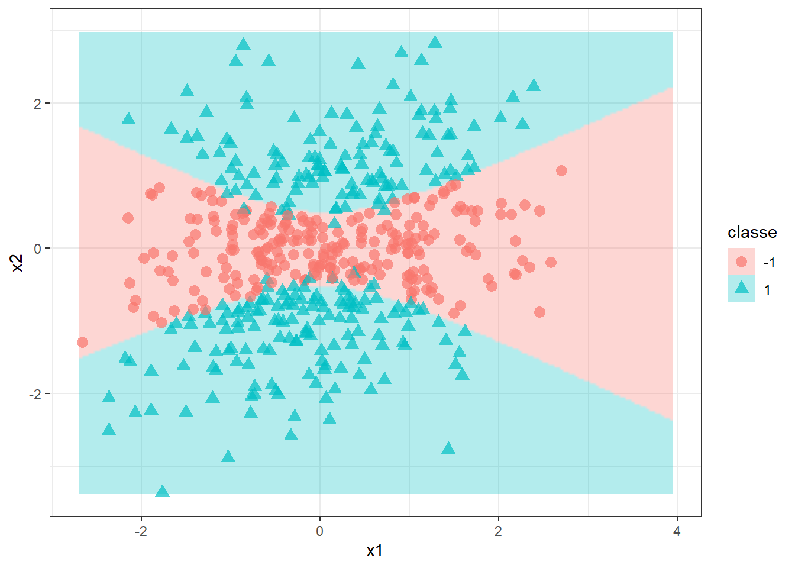
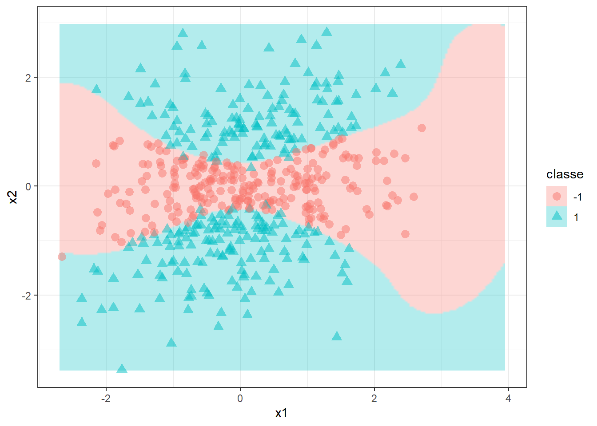

16 Máquinas de vetores de suporte
16.1 Classificador de máxima margem
Seja um problema de classificação binário, \(y=\{-1,1\}\) em função de dois preditores, \(\mathbf{x}=[x_1,x_2]^T\), conforme ilustrado na Figura 16.1.
Deseja-se encontrar um classificador, ou hiperplano, que separe tais observações de forma perfeita. Tal hiperplano pode ser representado matematicamente por \(b+\mathbf{w}^T\mathbf{x}=0\). Para \(k=2\), o separador consiste em uma linha, \(b+w_1x_1+w_2x_2 = 0\). Existem infinitas soluções para o problema ilustrado, a partir das quais as classes são ditas perfeitamente separáveis, conforme ilustrado na Figura 16.2.

A regra de classificação usando um hiperplano que faz a classificação perfeita em Equação 16.1.
\[ y = \begin{cases} +1 & \text{se } b + w_1x_1 + w_2x_2 \geq 1 \\ -1 & \text{se } b + w_1x_1 + w_2x_2 \leq -1 \end{cases} \tag{16.1}\]
Importante
Pode-se garantir que, para qualquer observação \(y_i\) de interesse \(y_i(b+w_1x_1+w_2x_2)>0\), de forma que sempre seja realizada a classificação correta.
Para garantir a obtenção deste hiperplano, usa-se o conceito de máxima margem. O separador de máxima margem é ilustrado em linha contínua na Figura 16.3. A distância entre ele e as linhas tracejadas paralelas é o que se denomina de margem. Os pontos que se distanciam do hiperplano com distância igual à margem são os vetores de suporte, sendo destacados com quadrado azul. Considerando a margem com comprimento unitário, \(M=1\), pode-se dizer que \(b+w_1x_1+w_2x_2 = 1\), para os pontos que coincidem com a margem superior, enquanto \(b+w_1x_1+w_2x_2 = -1\), para os pontos que interceptam a margem inferior.

Logo, para casos perfeitamente separáveis não há sequer um ponto que satisfaça \(b+w_1x_1+w_2x_2=0\), porém todos os pontos satisfazem a Equação 16.1.
Para encontrar tal hiperplano, busca-se maximizar a margem. Para tal maximização, pode-se considerar a diferença da projeção dos vetores de suporte, no vetor dos coeficientes, \((\mathbf{w}^T\mathbf{x}_a - \mathbf{w}^T\mathbf{x}_b)/||\mathbf{w}|| = 2/||\mathbf{w}||\), onde \(||\mathbf{w}||\) é o comprimento vetorial ou norma de \(\mathbf{w}\), \(||\mathbf{w}||=\sqrt{w_1^2+w_2^2}\). Logo, o problema a ser resolvido pode ser definido conforme a Formulação 16.2.
\[ \begin{aligned} \text{Max } & \begin{Bmatrix} \frac{2}{||\mathbf{w}||} \end{Bmatrix} \\ \textrm{s.t.: } & \begin{matrix} y_i(\mathbf{w}^T\mathbf{x}_i + b) \geq 1, \forall i=1,...,n\\ \end{matrix} \end{aligned} \tag{16.2}\]
Tal problema pode ser expresso como problema de minimização segundo a Formulação 16.3. O quadrado da norma facilita a otimização, transformando a função a ser minimizada em convexa.
\[ \begin{aligned} \text{Min } & \begin{Bmatrix} \frac{||\mathbf{w}||^2}{2} \end{Bmatrix} \\ \textrm{s.t.: } & \begin{matrix} y_i(\mathbf{w}^T\mathbf{x}_i + b) \geq 1, \forall i=1,...,n\\ \end{matrix} \end{aligned} \tag{16.3}\]
16.2 Classificador de vetores de suporte
Para casos não perfeitamente separáveis, pode-se permitir que a restrição, a qual até então garantia a classificação perfeita, seja violada. A Figura 16.4 ilustra um caso não perfeitamente separável, já com o classificador de vetores de suporte plotado. Pode-se observar que para a classe +1 todos os pontos foram classificados de forma correta, porém ao menos um deles ficou dentro da margem. Já para a classe -1, dois pontos foram classficados incorretamente, sendo um dentro e outro para além da margem oposta.

Para resolver o problema de classificação de forma a obter tal classificador de vetores de suporte, resolve-se o problema da Formulação 16.4, onde \(\xi_i\) consiste em variáveis de folga que permitem violar a margem e avaliar se a classificação é correta, de forma que se \(\xi_i = 0\), os pontos são classificados corretamente, se \(\xi_i \leq 1\), a observação está dentro da margem, porém se \(\xi_i > 1\) o ponto está além da margem e mal classificado. Acrescenta-se um termo à função objetivo, o qual penaliza as violações de margem, \(\sum_i\xi_i\). O parâmetro \(C\) determina o equilíbrio entre a maximização da margem e a minimização dos erros de classificação.
\[ \begin{aligned} \text{Min } & \begin{Bmatrix} \frac{||\mathbf{w}||^2}{2} + C\sum_i\xi_i \end{Bmatrix} \\ \textrm{s.t.: } & \bigg\{ \begin{matrix} y_i(\mathbf{w}^T\mathbf{x}_i + b) \geq 1 - \xi_i, \forall i=1,...,n\\ \xi_i \geq0 \end{matrix} \end{aligned} \tag{16.4}\]
16.3 Máquinas de vetores de suporte
Imagine um caso de classificação onde uma fronteira linear acarretará em baixo desempenho, conforme o ilustrado na Figura 16.5. Neste caso, a não lineariedade dos dados exige a aplicação de um separador mais flexível.

Para obter tal classificador, seja a função lagrangeana correspondente à formulação do classificador de vetores de suporte, a qual comporta objetivos e restrições em uma única função, conforme Equação 16.5.
\[ L=\frac{||\mathbf{w}||^2}{2} + C\sum_i\xi_i - \sum_i\alpha_i(y_i(\mathbf{w}^T\mathbf{x}_i + b) - 1 + \xi_i) -\sum_i\beta_i\xi_i\text{ ,} \tag{16.5}\]
onde \(\alpha_i\) e \(\beta_i\) são os multiplicadores de Lagrange, \(\alpha_i \geq0\) e \(\beta_i\geq0\) , \(i=1,...,n\). Para resolver tal problema deve-se derivar esta função em relação aos parâmetros do modelo e igualar a zero, isto é:
\[ \begin{align} \frac{\partial L}{\partial \mathbf{w}} &= \mathbf{w} - \sum_i\alpha_iy_i\mathbf{x}_i = 0 \\ \frac{\partial L}{\partial b} &= \sum_i\alpha_iy_i =0 \\ \frac{\partial L}{\partial \xi_i} &=C- \alpha_i - \beta_i= 0 \text{, } \forall i=1,...,n \\ \end{align} \tag{16.6}\]
Logo:
\[ \begin{align} \mathbf{w} &= \sum_i\alpha_iy_i\mathbf{x}_i \\ \sum_i\alpha_iy_i &=0 \\ \alpha_i + \beta_i&=C \text{, } \forall i=1,...,n \\ \end{align} \tag{16.7}\]
Substituindo tais resultados na função lagrangeana, pode-se formular o problema dual, conforme Equação 16.8.
\[ \begin{aligned} \text{Max } & \begin{Bmatrix} \sum_i\alpha_i -\frac{1}{2}\alpha_i\alpha_jy_iy_j\mathbf{x}_i^T\mathbf{x}_j \end{Bmatrix} \\ \textrm{s.t.: } & \bigg\{ \begin{matrix} \sum_iy_i\alpha_i=0\\ 0\leq\alpha_i\leq C \text{, } \forall i=1,...,n \end{matrix} \end{aligned} \tag{16.8}\]
O modelo apresentado inicialmente, \(b+\mathbf{w}^T\mathbf{x}=0\) pode ser reescrito considerando os multiplicadores de lagrange conforme Equação 16.9.
\[ \sum_i\alpha_iy_i\mathbf{x}_i^T\mathbf{x} + b \tag{16.9}\]
A resolução do problema dual em si apenas facilita a otimização dos parâmetros do modelo. Entretanto, é necessário algo mais para obtenção de classificadores que se adaptem a dados não lineares. Para tal, usa-se o chamado truque de kernel. A ideia é substituir a função linear dos vetores de suporte, \(\mathbf{x}_i^T\mathbf{x}\) por uma função mais complexa ou kernel, \(k(\mathbf{x}_i,\mathbf{x})\). A seguir são apresentadas algumas opções.
\[ \begin{align} \text{linear} &: k(\mathbf{x}_i,\mathbf{x}) = \mathbf{x}_i^T\mathbf{x} \\ \text{polinomial} &: k(\mathbf{x}_i,\mathbf{x}) = (\mathbf{x}_i^T\mathbf{x}+1)^d \\ \text{radial} &: k(\mathbf{x}_i,\mathbf{x}) = e^{-\gamma||\mathbf{x}-\mathbf{x}_i||^2} \end{align} \]
Obviamente, é importante considerar o kernel já na otimização, de forma que os hiperparâmetros específicos destes também sejam selecionados adequadamente aos dados. Para o exemplo plotado anteriormente, utilizando um kernel polinomial e metade das observações para treino, obtém-se o classificador plotado na Figura 16.6 com os dados remanescentes. Tal modelo apresenta os hiperparâmetros ótimos \(C=0.115\) e grau cúbico.

Para o mesmo exemplo, o kernel radial resulta no classificador plotado na Figura 16.7.
maximum number of iterations reached 1.811771e-05 1.811117e-05maximum number of iterations reached -9.97503e-05 -9.97442e-05maximum number of iterations reached 3.717993e-05 3.717967e-05maximum number of iterations reached -4.518541e-05 -4.518524e-05maximum number of iterations reached -0.0002464707 -0.0002464588maximum number of iterations reached -0.0005843504 -0.0005843218maximum number of iterations reached 0.0002326258 0.0002337597maximum number of iterations reached 0.0005197368 0.0005196848maximum number of iterations reached 5.671811e-05 5.671772e-05maximum number of iterations reached -3.398304e-05 -3.398298e-05maximum number of iterations reached 0.0001708195 0.0001708046maximum number of iterations reached 0.0001977221 0.0001977022maximum number of iterations reached 2.681665e-05 -2.674069e-05maximum number of iterations reached 0.0006325718 -0.0006324492maximum number of iterations reached -2.576617e-05 2.576543e-05maximum number of iterations reached -0.0001301318 0.0001301114maximum number of iterations reached 0.000192761 -0.0001927143maximum number of iterations reached 2.482689e-05 2.482681e-05maximum number of iterations reached 1.221405e-05 1.221403e-05maximum number of iterations reached 0.001520654 0.001519921maximum number of iterations reached 0.0003108737 0.0003108645maximum number of iterations reached 6.946511e-05 6.94646e-05maximum number of iterations reached 1.113874e-05 1.113873e-05maximum number of iterations reached 0.001616223 0.001615453maximum number of iterations reached 0.001863102 0.001861816maximum number of iterations reached 0.0006839556 0.0006836408maximum number of iterations reached 0.0001046359 0.0001046305maximum number of iterations reached 4.250345e-05 4.250276e-05maximum number of iterations reached 0.00104072 0.001040293maximum number of iterations reached 0.0007566385 0.0007562785
16.4 Implementações em R
A seguir serão expostas as implementações necessárias para obter os resultados do capítulo.
16.4.1 Máquina de vetores de suporte com kernel linear
As máquinas de vetores de suporte com kernel linear consistem no classificador de vetores de suporte. Para ilustrar este método, considera-se o conjunto de dados feijoes, com apenas duas classes e dois preditores, para trabalhar a classificação binária. Sorteia-se metade das observações para treino do modelo.
library(tidymodels)
library(sjdatar)
library(ggplot2)
library(dplyr)
theme_set(theme_bw())
data(feijoes)
dados <- feijoes |>
filter(feijao %in% c("branco", "carioca")) |>
select(feijao,espessura,largura) |>
mutate(feijao = factor(feijao))
set.seed(1)
split <- initial_split(dados, prop = 0.5)
dados_treino <- training(split)
dados_teste <- testing(split)A seguir define-se a receita, o modelo, o grid, o particionamento dos dados para validação cruzada e o workflow. Em seguida, realizada-se a validação cruzada com grid search. O modelo é definido com svm_linear, tendo para o caso de classificação um único hiperparâmetro, cost, o qual na teoria definimos como \(C\), o qual define quanto a margem pode ser violada. Sugere-se a biblioteca kernlab para máquinas de vetores de suporte. Considerou-se um grid regular com 25 níveis.
receita <- recipe(formula = feijao ~ .,
data = dados_treino)
svm_lin_model <-
svm_linear(
cost = tune()) |>
set_engine("kernlab") |>
set_mode("classification")
svm_grid <- grid_regular(cost(), levels = 25)
set.seed(234)
cell_folds <- vfold_cv(dados_treino,
v = 5)
set.seed(345)
svm_wf <- workflow() |>
add_recipe(receita) |>
add_model(svm_lin_model)
svm_res <-
svm_wf |>
tune_grid(
resamples = cell_folds,
grid = svm_grid
)A seguir seleciona-se o melhor modelo, além de finalizá-lo, de forma a usá-lo para realizar previsões.
perf_svm <- svm_res |>
collect_metrics() |>
filter(.metric == "roc_auc")
# perf_svm |> arrange(desc(mean))
best_svm <- select_best(svm_res,
metric = "roc_auc")
# best_svm
svm_final <- svm_wf |>
finalize_workflow(best_svm) |>
fit(data = dados_treino)
# svm_finalVisualizando o modelo com dados de teste.
grid <- expand.grid(espessura = seq(min(c(dados_treino$espessura,
dados_teste$espessura)),
max(c(dados_treino$espessura,
dados_teste$espessura)), length = 200),
largura = seq(min(c(dados_treino$largura,
dados_teste$largura)),
max(c(dados_treino$largura,
dados_teste$largura)), length = 200))
grid$class <- predict(svm_final, grid)$.pred_class
ggplot() +
geom_raster(aes(x = grid$espessura, y = grid$largura, fill = grid$class),
alpha = 0.3, interpolate = T) +
geom_point(aes(x = dados_teste$espessura, y = dados_teste$largura,
color = dados_teste$feijao,
shape = dados_teste$feijao), size = 3, alpha=.5)Realizando previsões.
pred_comp <- bind_cols(
predict(svm_final, dados_teste), # previsao discreta
predict(svm_final, dados_teste, type = "prob"),
dados_teste
)Matriz de confusão.
cm1 <- conf_mat(pred_comp, truth = feijao, estimate = .pred_class)
cm1Métricas de classificação.
metricas <- metric_set(accuracy, sensitivity, specificity, roc_auc)
metricas(pred_comp,
truth = feijao,
estimate = .pred_class,
.pred_branco)Curva ROC.
roc_data <- roc_curve(pred_comp, truth = feijao, .pred_branco)
autoplot(roc_data)16.4.2 Máquina de vetores de suporte com kernel polinomial
Para o kernel polinomial considera-se o conjunto de dados simulado simdatac2. Este conjunto de dados foi utilizado nos exemplos plotados nas Figura 16.6 e @Figura 16.7.
data("simdatac2")
dados <- simdatac2 |>
mutate(y = as.factor(y))
set.seed(1)
split <- initial_split(dados, prop = 0.5)
dados_treino <- training(split)
dados_teste <- testing(split)Segue-se um fluxo similar de treinamento do modelo. O modelo neste caso é definido com o comando svm_poly, com hiperparâmetros cost e degre, o qual define o grau polinomial. Optou-se, neste caso, por um grid irregular.
receita <- recipe(formula = y ~ .,
data = dados_treino) |>
step_normalize(all_numeric_predictors())
svm_model <-
svm_poly(
cost = tune(),
degree = tune(),
scale_factor = 1) |>
set_engine("kernlab") |>
set_mode("classification")
svm_grid <- grid_space_filling(
cost(range = c(-2, 2)),
degree(range = c(1, 3)),
size = 25
)
set.seed(234)
cell_folds <- vfold_cv(dados_treino,
v = 5)
set.seed(345)
svm_wf <- workflow() |>
add_recipe(receita) |>
add_model(svm_model)
svm_res <-
svm_wf |>
tune_grid(
resamples = cell_folds,
grid = svm_grid
)Extraindo e finalizando o melhor modelo.
perf_svm <- svm_res |>
collect_metrics() |>
filter(.metric == "roc_auc")
best_svm <- select_best(svm_res,
metric = "roc_auc")
svm_final <- svm_wf |>
finalize_workflow(best_svm) |>
fit(data = dados_treino)Visualizando o modelo com dados de teste.
grid <- expand.grid(x1 = seq(min(c(dados_treino$x1,
dados_teste$x1)),
max(c(dados_treino$x1,
dados_teste$x1)), length = 200),
x2 = seq(min(c(dados_treino$x2,
dados_teste$x2)),
max(c(dados_treino$x2,
dados_teste$x2)), length = 200))
grid$class <- predict(svm_final, grid)$.pred_class
ggplot() +
geom_raster(aes(x = grid$x1, y = grid$x2, fill = grid$class),
alpha = 0.3, interpolate = T) +
geom_point(aes(x = dados_teste$x1, y = dados_teste$x2,
color = dados_teste$y,
shape = dados_teste$y), size = 3, alpha=.7) +
labs(x = "x1", y = "x2", col = "classe",
shape = "classe", fill = "classe") + theme_bw()Realizando previsões.
pred_comp <- bind_cols(
predict(svm_final, dados_teste), # previsao discreta
predict(svm_final, dados_teste, type = "prob"),
dados_teste
)Matriz de confusão.
cm1 <- conf_mat(pred_comp, truth = y, estimate = .pred_class)
cm1Métricas de classificação.
metricas <- metric_set(accuracy, sensitivity, specificity, roc_auc)
metricas(pred_comp,
truth = y,
estimate = .pred_class,
`.pred_-1`)Curva ROC.
roc_data <- roc_curve(pred_comp, truth = y, `.pred_-1`)
autoplot(roc_data)16.4.3 Máquina de vetores de suporte com kernel radial
Para o caso radial utiliza-se o comando svm_rbf. Segue-se o mesmo fluxo de treinamento.
svm_model <-
svm_rbf(
cost = tune(),
rbf_sigma = tune()) |>
set_engine("kernlab") |>
set_mode("classification")
svm_grid <- grid_space_filling(cost(),
rbf_sigma(),
size = 25)
set.seed(234)
cell_folds <- vfold_cv(dados_treino,
v = 5)
set.seed(345)
svm_wf <- workflow() |>
add_recipe(receita) |>
add_model(svm_model)
svm_res <-
svm_wf |>
tune_grid(
resamples = cell_folds,
grid = svm_grid
)Extraindo e finalizando o melhor modelo
perf_svm <- svm_res |>
collect_metrics() |>
filter(.metric == "roc_auc")
best_svm <- select_best(svm_res,
metric = "roc_auc")
svm_final <- svm_wf |>
finalize_workflow(best_svm) |>
fit(data = dados_treino)Modelo com dados de teste.
grid <- expand.grid(x1 = seq(min(c(dados_treino$x1,
dados_teste$x1)),
max(c(dados_treino$x1,
dados_teste$x1)), length = 200),
x2 = seq(min(c(dados_treino$x2,
dados_teste$x2)),
max(c(dados_treino$x2,
dados_teste$x2)), length = 200))
grid$class <- predict(svm_final, grid)$.pred_class
## Teste
ggplot() +
geom_raster(aes(x = grid$x1, y = grid$x2, fill = grid$class),
alpha = 0.3, interpolate = T) +
geom_point(aes(x = dados_teste$x1, y = dados_teste$x2,
color = dados_teste$y,
shape = dados_teste$y), size = 3, alpha=.7) +
labs(x = "x1", y = "x2", col = "classe",
shape = "classe", fill = "classe") + theme_bw()Realizando previsões.
pred_comp <- bind_cols(
predict(svm_final, dados_teste), # previsao discreta
predict(svm_final, dados_teste, type = "prob"),
dados_teste
)Matriz de confusão.
cm1 <- conf_mat(pred_comp, truth = y, estimate = .pred_class)
cm1Métricas de classificação.
metricas <- metric_set(accuracy, sensitivity, specificity, roc_auc)
metricas(pred_comp,
truth = y,
estimate = .pred_class,
`.pred_-1`)Curva ROC.
roc_data <- roc_curve(pred_comp, truth = y, `.pred_-1`)
autoplot(roc_data)Referências
Boser, B. E., Guyon, I. M., & Vapnik, V. N. (1992, July). A training algorithm for optimal margin classifiers. In Proceedings of the fifth annual workshop on Computational learning theory (pp. 144-152).
Cortes, C., & Vapnik, V. (1995). Support-vector networks. Machine learning, 20, 273-297.
Hastie, T., Tibshirani, R., Friedman, J. H., & Friedman, J. H. (2009). The elements of statistical learning: data mining, inference, and prediction (Vol. 2, pp. 1-758). New York: springer.
Vapnik, V. N. (1999). An overview of statistical learning theory. IEEE transactions on neural networks, 10(5), 988-999.
Vapnik, V. (2013). The nature of statistical learning theory. Springer science & business media.
16.5 Exercícios
Obtenha um modelo de máquinas de vetores de suporte para classificação binária para o conjunto de dados
simdatac1. Obtenha a matriz de confusão, curva ROC e métricas de classificação para os dados de teste.Obtenha um modelo de máquinas de vetores de suporte para classificar feijões usando o cojunto de dados
feijoes. Obtenha a matriz de confusão, curva ROC e métricas de classificação para os dados de teste. Compare com os resultados dos modelos de regressão logística obtidos no item Seção 13.8.